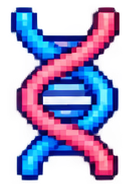
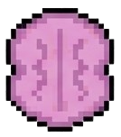
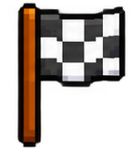
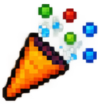

Uma área do parque pode estar contaminada. Sua missão é investigar o
ambiente e descobrir onde o ciclo da Ascaridíase pode começar.
Investigue o parque e encontre o elemento que pode estar contaminado com ovos de Ascaris lumbricoides
Organize o ciclo da Ascaridíase. Clique nas etapas na ordem correta, do início ao fim.

Depois de ingerido, o ovo eclode e a larva percorre um caminho dentro do corpo. Responda cada etapa corretamente.
Entre os hábitos abaixo, encontre todos os que realmente ajudam a prevenir a Ascaridíase.
Encontrados: 0 / 4
CORRETO!
Você encontrou a fonte de contaminação
com 100 pontos!
As fezes de uma pessoa infectada podem liberar ovos de Ascaris lumbricoides no ambiente.
Esses ovos podem contaminar o solo, a água e os alimentos.

Como a infecção acontece
A infecção acontece quando uma pessoa ingere ovos do parasita presentes
em água, alimentos ou mãos contaminadas.

FASE 1 CONCLUÍDA!
Pontos: 100
Erros: 0
Em construção!
A próxima fase será adicionada em breve. Continue acompanhando a investigação!
O tempo acabou!
O tempo desta fase terminou. Vamos reiniciar o jogo do começo para você tentar de novo.
Vamos em frente!
Você atingiu o número máximo de tentativas nesta fase. Sem problemas — vamos seguir para a
próxima fase e continuar a investigação!

MISSÃO CUMPRIDA!
Você investigou o parque, remontou o ciclo de transmissão, seguiu o caminho do parasita
dentro do corpo e descobriu como preveni-lo. Assim se interrompe o ciclo da Ascaridíase!